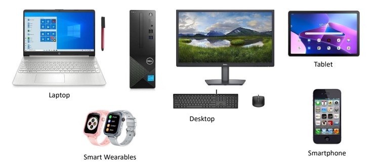

Abacus
A computing tool that has been used as early as the Mesopotamian period.
Astrolabe
A computing tool that was invented around the Hellenistic civilization.
Analytical Engine
Designed and partially built by Charles Babbage. It is considered as the first computer and was based on the Difference Engine which was a simple calculating machine.
Electronic Numerical Integrator and Calculator (ENIAC)
Built in 1943 and its invention led to the formation of the Association for Computing Machinery (ACM).
Category of Modern Digital
- Computers by Size
- Microcomputer
- Mainframe
- Supercomputer

What is a Computer System?
The working definition of a computer system posits that it is comprised of functional entities, namely the hardware and software, which together are able to accept data (input), process it and provide feedback (output) in a format that can be understood by the user.
Hardware
A computer system has hardware that can accept commands and data (input) from the user. These are called input devices.
Software
Intangible parts of the computer system. commonly known as “programs” or “applications”.
Memory
- Primary memory
- Random access memory (RAM)
- Read-only memory (ROM)
- Secondary memory